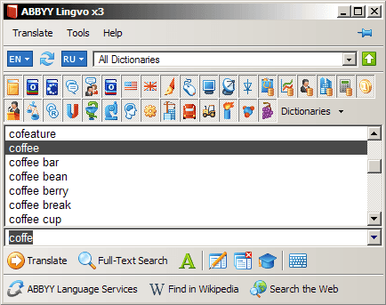
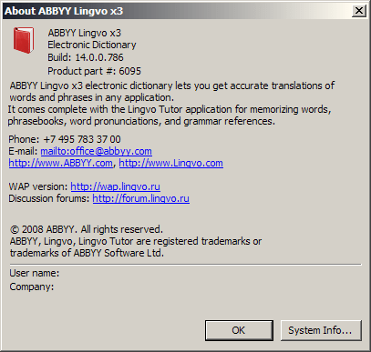
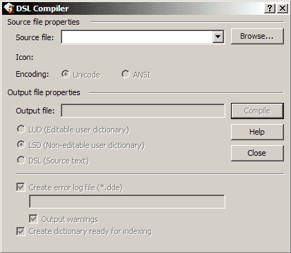
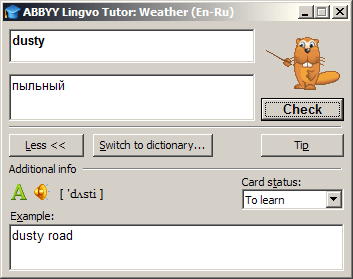

Lingvo x3 (14.0)
Хроника
Год выпуска: 2008.
Своим особым наименованием эта версия обязана суеверности сотрудников ABBYY. Прямого употребления пресловутой дюжины в ABBYY избежали двумя способами. Внутренняя нумерация версий перескочила с 12 сразу на 14, а завуалированное напоминание о пропущенной 13 проявилось в суффиксе x3, который представляет собой соединение римской цифры «десять» X с арабской «три» 3.
Введены в использование форматы файлов словарей *.lod, *.ldp и *.lsa.
В поддержке латинского языка наблюдаются недоразумения. В языковых директивах и атрибуте name тэга lang поддерживается наименование Latin. При этом в атрибуте id тэга lang поддерживается идентификатор 1540, а идентификатор 1142 объявляется ошибочным. Это противоречит стандартам, согласно которым таблице символов Latin соответствует идентификатор 1142, а идентификатору 1540 соответствует таблица символов Latin_legacy.
Данная версия — «рекордсмен» по доступным языкам интерфейса. К унаследованным из 12.0 английскому, русскому и украинскому добавляются казахский, испанский (традиционной сортировки), немецкий, французский, польский и китайский (упрощённый).
Внешний вид
Основное окно программы, список заголовков:

Словарная карточка:

Окошко аннотации словаря:

Вкладки окна управления словарями:


Вкладки окна настроек программы:


Окошко «О программе»:

Окно компилятора пользовательских словарей:

Окно приложения Tutor:

Состав словарей
| Наименование | Автор, издание | Объём |
|---|---|---|
| ... в разработке ... | ... в разработке ... | ... в разработке ... |